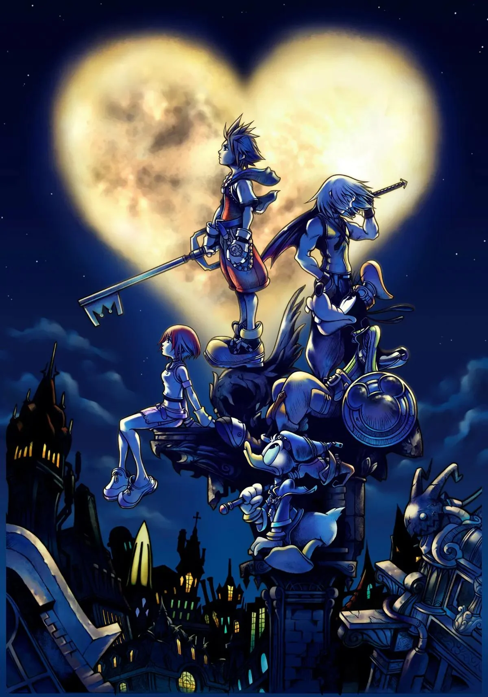

Kingdom Hearts

¿Qué es Kingdom Hearts?
Kingdom Hearts es una saga de videojuegos de rol y acción creada por Square Enix en colaboración con Disney. El primer juego salió en 2002 y mezcla personajes de Final Fantasy con mundos de películas de Disney.
Personajes principales
El protagonista es Sora, un chico que maneja la Llave Espada y viaja por distintos mundos acompañado de Donald y Goofy. Sus mejores amigos son Riku y Kairi.
¿Por qué me gusta?
Este juego me lo empezé este verano y me enganchó desde el primer momento. Me gusta mucho la historia, los personajes y la música. Mi juego favorito es Kingdom Hearts II, no solo por la historia, sino también por su jugabilidad y la banda sonora. La música de Kingdom Hearts es increíble.